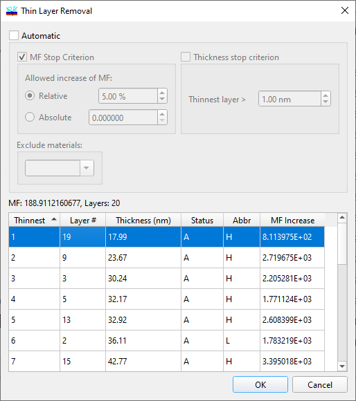
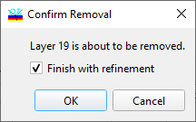

Removing thin layers
Removing Thin Layers
Navigation: OptiLayer Menu Commands > Synthesis Menu >
Removing Thin Layers
` <idh_design_cleaner.html>`__ ` <idh_menu_synthesis.html>`__ ` <idh_modify_design.html>`__
The Thin Layer Removal command is accessible from the Synthesis Menu, allowing the user to remove thin layers from the obtained design.
The Thin Layer Removal window displays the expected merit function values after removing various design layers (MF increase column). Layers in the list box are sorted by their physical thickness values in ascending order. In Automatic mode, Thin Layer Removal will continue until one of the termination criteria is met. Termination criteria include stopping based on the allowed increase of the merit function value and/or stopping when there are no layers thinner than a given value. The “Exclude material(s)” list enables the exclusion of specific materials from consideration. This feature is particularly useful when dealing with thin metal layers present in the design.

In Manual mode, it is possible to remove one layer at a time.

To remove a layer in Manual mode, select the corresponding row in the list box (the name of the layer will appear in the message line above the list box), and click the OK button. You can only remove one layer at a time.

If the Finish with Refinement checkbox is checked, OptiLayer will automatically conduct the Refinement procedure after each layer removal.
Click the Cancel button to exit the dialog without removing any layers. You can also utilize the Design Cleaner procedure to automatically decrease the number of layers within the acceptable increase in merit function value.